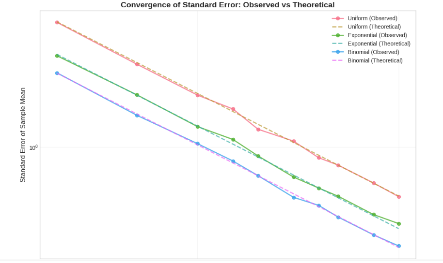
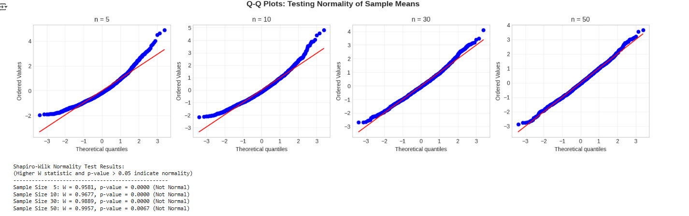
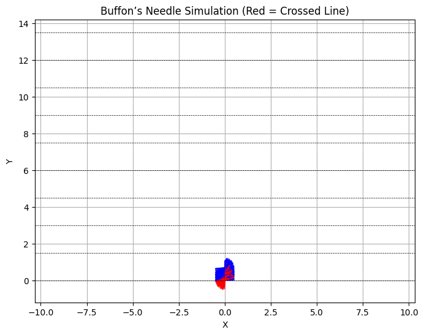
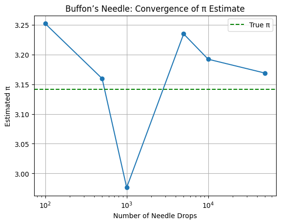

Problem 2
Estimating π Using Monte Carlo – Circle Method
1. Theoretical Foundation
We estimate π by simulating points in a square and checking how many fall inside an inscribed circle.
- For a unit circle centered at the origin, any point \((x, y)\) lies inside the circle if:
- The area of the full square is \(4\) (from \([-1, 1] \times [-1, 1]\)).
- The area of the unit circle is \(π\).
The ratio of points inside the circle to the total points approximates the ratio of their areas:
Rearranging:
2. Simulation – Estimating π
import numpy as np
def estimate_pi(num_points=10000):
x = np.random.uniform(-1, 1, num_points)
y = np.random.uniform(-1, 1, num_points)
inside_circle = x**2 + y**2 <= 1
pi_estimate = 4 * np.sum(inside_circle) / num_points
return pi_estimate, x, y, inside_circle
# Example usage
pi, x_vals, y_vals, mask = estimate_pi(10000)
print(f"Estimated π ≈ {pi}")
Estimated π ≈ 3.1548
3. Visualization of Points
import matplotlib.pyplot as plt
def plot_points(x, y, inside_circle):
plt.figure(figsize=(6,6))
plt.scatter(x[inside_circle], y[inside_circle], s=1, color='green', label='Inside Circle')
plt.scatter(x[~inside_circle], y[~inside_circle], s=1, color='red', label='Outside Circle')
plt.gca().set_aspect('equal')
plt.title("Monte Carlo π Estimation")
plt.xlabel("X")
plt.ylabel("Y")
plt.legend()
plt.grid(True)
plt.show()
plot_points(x_vals, y_vals, mask)

4. Accuracy and Convergence
Observing Convergencee
import matplotlib.pyplot as plt
sample_sizes = [10, 100, 1000, 5000, 10000, 50000, 100000]
estimates = []
for n in sample_sizes:
pi_est, *_ = estimate_pi(n)
estimates.append(pi_est)
plt.plot(sample_sizes, estimates, marker='o')
plt.axhline(np.pi, color='red', linestyle='--', label='True π')
plt.title("Convergence of π Estimate")
plt.xlabel("Number of Points")
plt.ylabel("Estimated π")
plt.legend()
plt.grid(True)
plt.xscale('log')
plt.show()

Estimating π Using Buffon’s Needle
1. Theoretical Foundation
Problem Description
Buffon’s Needle is a classic probability problem:
- Drop a needle of length \(L\) onto a plane with equally spaced parallel lines a distance \(d\) apart.
- The probability \(P\) of the needle crossing a line is related to \(π\):
Deriving π
Rearranged to estimate π:
Where: - \(L\) = needle length - \(d\) = distance between lines - \(N\) = total number of throws - \(C\) = number of times the needle crosses a line
Note: Valid only when \(L \leq d\)
2. Simulation
import numpy as np
def buffon_needle(num_throws=10000, L=1.0, d=1.5):
assert L <= d, "Needle length must be less than or equal to spacing between lines."
# Random needle midpoints and angles
y_center = np.random.uniform(0, d / 2, num_throws)
theta = np.random.uniform(0, np.pi / 2, num_throws)
# Check if needle crosses a line
crosses = y_center <= (L / 2) * np.sin(theta)
num_crosses = np.sum(crosses)
# Estimate π
if num_crosses == 0:
return None # Avoid division by zero
pi_est = (2 * L * num_throws) / (d * num_crosses)
return pi_est, y_center, theta, crosses
only runs the calculation — it doesn't produce a plot by itself.
3. Visualization
import matplotlib.pyplot as plt
def plot_needles(y_center, theta, crosses, L=1.0, d=1.5, num_shown=200):
x_center = np.zeros_like(y_center)
dx = (L / 2) * np.cos(theta)
dy = (L / 2) * np.sin(theta)
plt.figure(figsize=(8, 6))
for i in range(min(num_shown, len(y_center))):
x0 = x_center[i] - dx[i]
x1 = x_center[i] + dx[i]
y0 = y_center[i] - dy[i]
y1 = y_center[i] + dy[i]
color = 'red' if crosses[i] else 'blue'
plt.plot([x0, x1], [y0, y1], color=color)
# Draw parallel lines
for y in np.arange(0, 10*d, d):
plt.axhline(y, color='black', linewidth=0.5, linestyle='--')
plt.title("Buffon’s Needle Simulation (Red = Crossing)")
plt.xlabel("X")
plt.ylabel("Y")
plt.axis('equal')
plt.grid(True)
plt.show()
It doesnt produce a plot because it needs input from the simulation first. The following code below builds on the Buffon’s Needle simulation and includes a visual representation of the needle drops:
- Red needles indicate those that crossed a line.
- Blue needles indicate those that did not cross.
- Dashed black lines represent the parallel floor lines.
- This visualization helps us understand how the estimate of π is formed geometrically.
It uses the output from the simulation to produce an intuitive and engaging plot of the experiment.
import numpy as np
import matplotlib.pyplot as plt
# --- Buffon’s Needle Simulation ---
def buffon_needle(num_throws=1000, L=1.0, d=1.5):
assert L <= d, "Needle length must be less than or equal to spacing between lines."
# Generate random midpoints and angles
y_center = np.random.uniform(0, d / 2, num_throws)
theta = np.random.uniform(0, np.pi / 2, num_throws)
# Check if needle crosses a line
crosses = y_center <= (L / 2) * np.sin(theta)
num_crosses = np.sum(crosses)
if num_crosses == 0:
return None, y_center, theta, crosses # Avoid division by zero
# Estimate π
pi_estimate = (2 * L * num_throws) / (d * num_crosses)
return pi_estimate, y_center, theta, crosses
# --- Needle Plotting Function ---
def plot_needles(y_center, theta, crosses, L=1.0, d=1.5, num_shown=300):
x_center = np.zeros_like(y_center)
dx = (L / 2) * np.cos(theta)
dy = (L / 2) * np.sin(theta)
plt.figure(figsize=(8, 6))
for i in range(min(num_shown, len(y_center))):
x0 = x_center[i] - dx[i]
x1 = x_center[i] + dx[i]
y0 = y_center[i] - dy[i]
y1 = y_center[i] + dy[i]
color = 'red' if crosses[i] else 'blue'
plt.plot([x0, x1], [y0, y1], color=color, linewidth=0.8)
# Draw parallel lines
for y in np.arange(0, 10 * d, d):
plt.axhline(y, color='black', linewidth=0.5, linestyle='--')
plt.title("Buffon’s Needle Simulation (Red = Crossed Line)")
plt.xlabel("X")
plt.ylabel("Y")
plt.axis("equal")
plt.grid(True)
plt.show()
# --- Run Simulation and Plot ---
pi_val, y_vals, theta_vals, cross_mask = buffon_needle(num_throws=1000)
print(f"Estimated π ≈ {pi_val:.6f}")
plot_needles(y_vals, theta_vals, cross_mask)


4. Analysis of Accuracy and Convergence
sample_sizes = [100, 500, 1000, 5000, 10000, 50000]
pi_estimates = []
for n in sample_sizes:
pi_val, *_ = buffon_needle(num_throws=n)
pi_estimates.append(pi_val)
plt.plot(sample_sizes, pi_estimates, marker='o')
plt.axhline(np.pi, color='green', linestyle='--', label='True π')
plt.title("Buffon’s Needle: Convergence of π Estimate")
plt.xlabel("Number of Needle Drops")
plt.ylabel("Estimated π")
plt.legend()
plt.grid(True)
plt.xscale("log")
plt.show()
